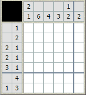
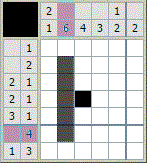
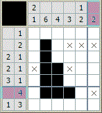
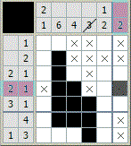
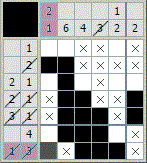
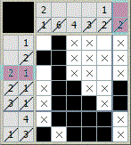
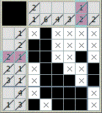

Nonogram Rules
-

Japanese crossword puzzles consist of a grid with empty cells, and there are numbers provided at the top and to the left of the grid for each row and column.
Each number on the left indicates how many groups of consecutive filled cells are in the corresponding row, in the order they appear.
There must be at least one empty cell between different groups. Similarly, the numbers at the top represent vertical groups.
Let me show you how to solve Japanese crossword puzzles with a specific example. Let's look at the numbers at the top and to the left and identify the largest ones among them.
-

In the second column, there is a single number 6. This means that there is a group of 6 unfilled cells in this column. If we consider the two extreme positions (starting from the top and from the bottom), this block will always fall under the filled area. Therefore, we can confidently fill in 5 cells.
In the third column, the number is 4. Just like in the case of the second column, there is an area that must be filled, but only with one cell. If we consider the block's position at the very bottom and very top, we can see that the filled cell is located at the intersection.
In all rows (and columns) where the number is greater than half the width (for columns, the height) of the Japanese crossword, there are such areas.
-

Now let's look at the rows. In the second row, one cell is currently filled, and the numerical notation shows a single number 2. This means that another cell next to it must be filled. It can either be immediately to the left or right. Cells 4, 5, and 6 are definitely empty, so we mark them with crosses.
In the fourth row, two cells must be filled first, and then one cell. The block of two filled cells is already marked, so we surround it with crosses on both sides. The single cell must be in the fifth or sixth position. Since we don't know exactly where, we can't place a cross there. Let's move on.
In the fifth row, three cells must be filled first, and then one cell. No matter how these two blocks are arranged, the third cell from the left will definitely be filled.
In the sixth row, there is the number 4. Since one cell is already filled, we can see that the block of four cells can only start either from the first or the second cell, and it cannot start from the extreme right position. Therefore, we mark it with a cross. Cells 3 and 4 are filled because they will be filled in any of the possible arrangements.
-

Let's return to the columns. In the first and second columns, nothing has been clarified yet. In the third column, we can see that there should be a block of 4 cells, with 3 of them already filled. The fourth can only be either above or below the block. This means that cells 1 and 2 will be empty.
In the fourth column, there should be a block of three cells. One is already filled. Since there is a cross in the fourth cell, we only have one possible arrangement for this block. We fill it in and mark the remaining empty cells in this column with crosses.
In the sixth column, we cross out the first and last cells, as there are crosses in the second and second-to-last positions, and there can only be one block of two cells in this column. In the remaining three cells, the block can be placed in two ways, but in both cases, the central cell will be filled.
-

We look at the second row and see that only one empty cell remains. We fill it in and get a block of two cells, as required by the condition.
In the fourth row, we have already found both blocks (2 and 1), so we cross out the numbers in the legend and mark the empty fifth cell with a cross.
In the fifth row, we have found the block of three cells. For the single cell, only one empty cell remains, and we fill it in.
In the seventh row, for the numbers 3 and 1, there is only one possible arrangement left. We fill in the cells and cross out the others.
-

In the first column, we have found the single cell. We cross out the adjacent cell.
In the second column, for the sixth cell, there is only one free cell left, which we fill in.
In the third column, we cross out the empty cell, as the block of four cells has already been found. In the fifth column, we fill in the second-to-last cell, as the last position already has one filled cell, and according to the top numerical legend, there should be a block of two cells.
In the sixth column, we mark the third cell with a cross, as the only block has already been found.
-

In the first row, we have found the single cell, so we cross out the remaining empty cells.
In the third column, there is only one possible arrangement left for the numbers 2 and 1. We fill in the cells.
There are no unfilled cells left, which means we have completely solved the Japanese crossword! A cute little kitten has emerged.